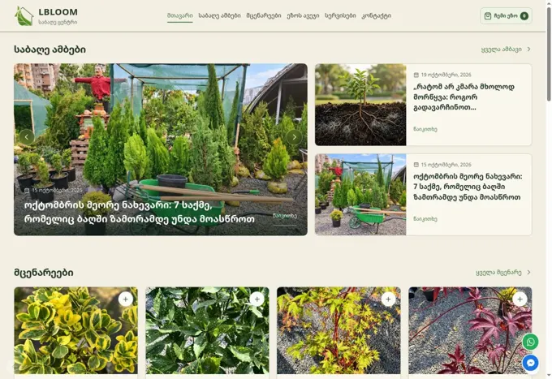
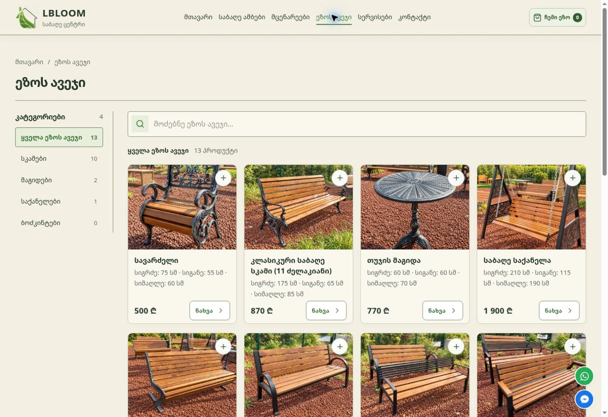

NewUniUniversity redesign
In progressDESIGN · TECHNOLOGY · BUSINESS THINKING
Digital products
that work.
Websites, digital products and business systems for growing companies. Design and development with a marketer’s eye — built to bring in customers, not just to look good.
AG
Anri GuliashviliFounder · Marketing · Full-stack development
SELECTED WORK

LbloomGarden center website · design, development & admin system
Live · lbloom.ge
JibuDigital product · full-stack development
In development
CASE STUDY · GARDEN CENTER, TBILISI
Lbloom: a catalog website and content system, built end to end
- The challenge
- A garden center with a wide range of plants and garden furniture needed one place to show its products, share expert advice and turn visitors into calls and store visits.
- What we built
- Custom design and full-stack development: plant and furniture catalogs, a “My Garden” list for saving ideas, garden stories, services pages and video — plus an admin system so the team updates products and content on its own.
- Today
- The site is live and is the foundation of Lbloom’s ongoing digital marketing — which our founder also leads. Design, technology and marketing in one set of hands.
What we do
Design · Development · Ongoing careWebsites & E-commerce
Business websites, redesigns and online stores designed and developed for your customers.
What’s included
Page structure, UI design, responsive development and content management. For stores: product catalog, ordering flow and agreed integrations.
Digital products & systems
Web applications, admin panels and dashboards that bring your team’s work together.
What’s included
Workflow design, data management, user roles and the agreed features. Reports, exports and integrations are defined around your needs.
AI agents & automation
Connect your tools and automate repetitive tasks, from incoming inquiries to CRM updates.
What’s included
Process mapping, service integrations and agents for defined tasks. For example: a form inquiry creates a CRM entry and notifies your team.
Maintenance & development
Fix a problem, update your content or add a new feature to your existing website.
How it works
Send us a task or a list of changes. We review the website, agree the scope and timing, then implement and test. One-off work or ongoing collaboration.
FOUNDER-LED STUDIO
You work directly with the person building your project.
I’m Anri Guliashvili. I studied business administration, led front-end development of React and TypeScript systems, and today I also run digital marketing for a retail business. That mix means I build with your customers and your numbers in mind — not just the code.
- Business first. Every project starts from what should change for your business — more inquiries, less manual work, a clearer offer.
- Fast, modern delivery. A lean, AI-assisted workflow means shorter timelines and fair prices — with every line reviewed before it ships.
- Based in Tbilisi, working worldwide. English or Georgian, GMT+4 — a comfortable overlap with Europe and the Middle East.
From idea to launch.
Discover
Understand your business and what your customers need.
LET’S WORK TOGETHER
Tell us what you have in mind.
A new website, a redesign or a tool for your team — start with a few details. Not sure yet? Ask for a free review of your current website and get concrete ideas for improving it.